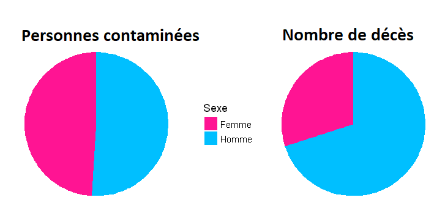

Mais ... Tous ceux qui l'attrapent risquent de mourir !
Faux !
Pour la plupart des gens, les symptômes sont ceux d'une grippe assez violente: fièvre, toux, fatigue...
Moins de 10% des personnes contaminées voient leur état empirer.
Mais en cas de complication, une hospitalisation peut être nécessaire.
Quels sont vos risques de complications ?
Données ici et la!
Vous êtes:
Vous êtes déja plus à risque.
En effet, les hommes représentent 51% des cas de Covid-19, mais 70% des morts. Cela se vérifie en Chine, mais aussi en Espagne et en Italie.

Une différence qui peut s'expliquer par un système immunitaire moins réactif, mais aussi une tendance globale à moins suivre les consignes et à moins se laver les mains.
Question suivante
Vous êtes déja moins à risque.
En effet, les femmess représentent 49% des cas de Covid-19, mais seulement 30% des morts. Cela se vérifie en Chine, mais aussi en Espagne et en Italie.
Une différence qui peut s'expliquer par un système immunitaire naturellement plus réactif grâce aux hormones et à la génétique, mais aussi une tendance globale à mieux suivre les consignes et à plus se laver les mains.
Cependant, elles représentent en France une très grosse partie du personnel , particulièrement à risque de contamination. Elles représentent 90% de caissières, 90% des aides soignantes et 78% du personnel hospitaliers.
Question suivante
Vous avez:
Moins de 30ans, vous êtes moins à risque que la moyenne.
Vous avez peu de risque de développer des complications, mais cela peut faire de vous un dangereux vecteur de transmission ! Par solidarité, soyez prudent et évitez els contacts, surtout avec des personnes agées.
Enfin, votre âge ne vous protège pas des risques liés à votre style de vie, comme la cigarette.
Question suivante
Vous n'avez pas de risque particulier.
Cependant, vous risquez tout de même de développer des symptômes, ou même de le transmettre involontairement.
Enfin, votre âge ne vous protège pas des risques liés à votre style de vie, comme la cigarette.
Question suivante
Plus de 60ans, vous êtes très à risque.
Comme vous avez du beaucoup l'entendre récement, votre âge vous met particulièrement à risque de complications. De plus, en situation de surcharge des services de santé, vous avez moins de chance d'être pris en charge.
Surtout, soyez prudent. Ce n'est malheureusement pas la moment de profiter de la tranquilité des rues.
Question suivante
Mais surtout
Il existe de nombreux autres facteurs de risques, comme une maladie cardiaque ou le fait de fumer. C'est pour cela qu'il est important de se protéger, mais aussi de protéger notre entourage dont nous ne connaissons pas toutes les fragilités.
Ainsi, il est important de:
Suivre les consignes officielles. C'est aussi une bonne idée pour éviter une amende mirobolante (200 euros).
Se protéger lors des sorties, en portant un masque en tissu et en se lavant fréquement les mains.
Mais aussi prendre soin de soi et de sa santé mentale:
Gérer son stress
Faire du sport en appartement
Savoir que la quarantaine impacte le moral.
Et en cas de besoin, demander de l'aide !
Suivant